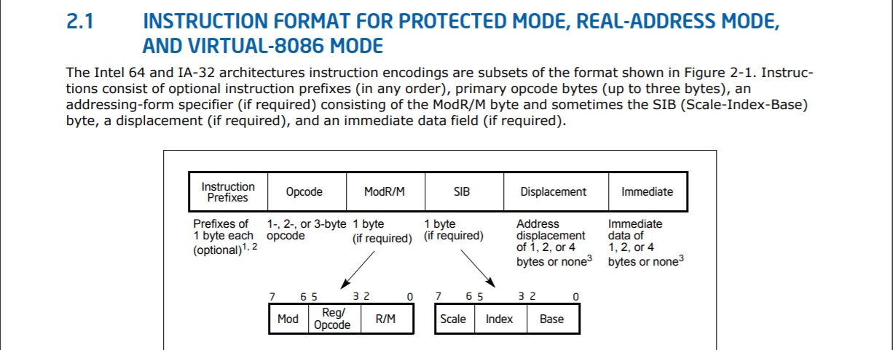
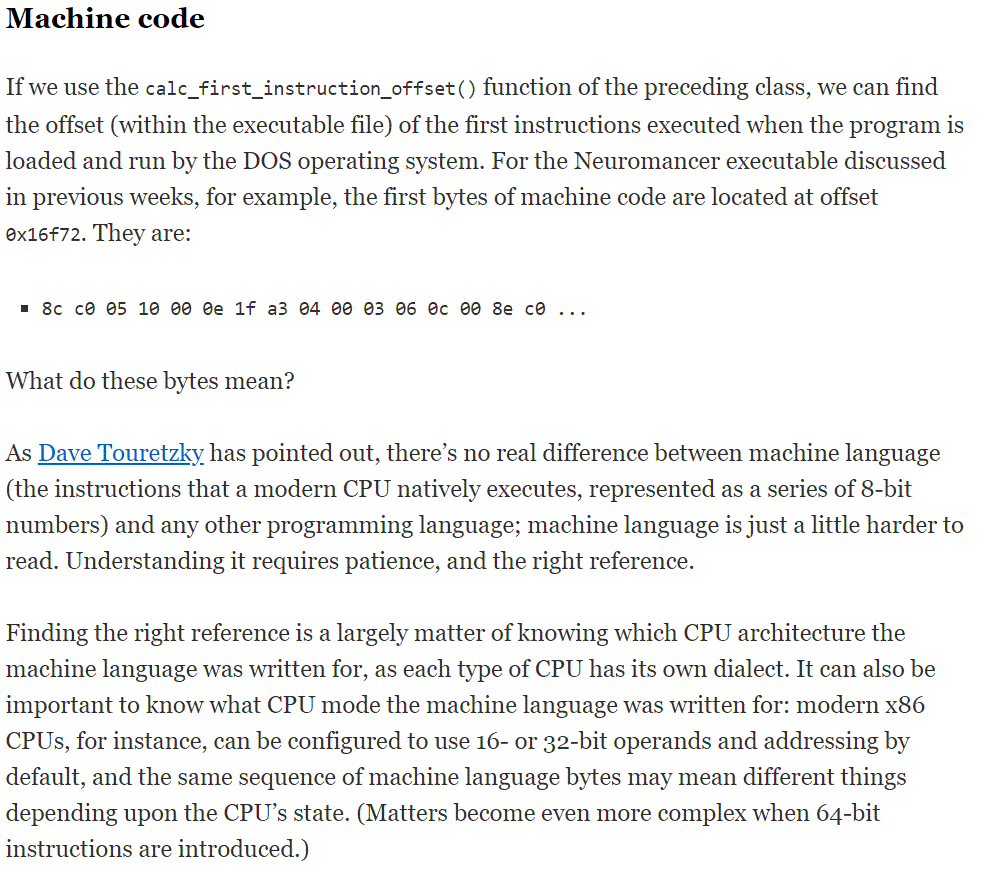
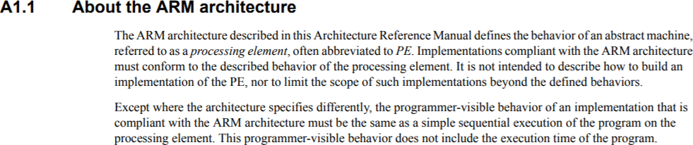

JFH-Disassembly.
Welcome to JFH disassembly. A all in one multi-platform binary tool.
Machine code Introduction.
In the very first document we discussed the basic primitive data types that processors can work with, and do operations with.
In this document we will discuss basic machine code, and what we actually mean by system architecture. Thus what instruction sets are.
When you compare a x86 core from the 80's like the 16 bit Intel 8086 to a modern AMD ryzen. The first though that runs though peoples heads is that they run completely different machine code.
Well modern x86 can still run 16 bit 8086 machine code in 16 bit mode. This is called the processor instruction set architecture.
Even though it's a AMD core. It still runs the same x86 machine code as a Intel x86. As x86 is the instruction set architecture.
A processor that is architecture x86 means it runs x86 machine code natively without translation. This means binary software wrote in the 80's still runs on the most modern x86 core made by any company.
A processor has a foundational instruction set that can do arithmetic with the basic primitive data types, and at least do comparison.
The binary encoded instructions the processor understand as a particular command do not change in later x86 cores.
However the internal design of the circuits may change, but the binary encoding, for each instruction does not change.
Instruction encoding.
A single 0 to 255 byte value is used, for which operation you wish the CPU to do in a x86 core. This is called the opcode.
This link is a mapping of the original 8086 instructions. Without any added instructions that became available in later cores.
The 8086 map is the original foundation, for x86 machine code. Thus modern x86 cores even AMD ones still run the same basic operations using exactly the same encoding.
A processor has variables called registers which operations are completed with. In this example we use the ADD operation code 02.
MOV AH,97
MOV BX,3333
ADD AH, BYTE PTR[BX]
Machine code:
B4 97
BB 33 33
02 27
MOV is short for move. MOV set the value of the AH register 97, and then BX is set 3333. The ADD operation uses the BX register as a location to a byte that is added with AH.
There are two 8 bit ADD operations. The other ADD operation ADD's, and stores the result at a memory location. This is ADD operation code 00.
MOV AH,97
MOV BX,3333
ADD BYTE PTR[BX], AH
Machine code:
B4 97
BB 33 33
00 27
There is also two 16 bit ADD operations that do the same operation. Codes 01, and 03.
Lastly there also is two ADD operations that add a register by the next two byes, or one byte after the ADD operation.
Add operation opcode 04.
MOV AL, 97
ADD AL, 33
Machine code:
B4 97
04 33
And two byte (16 bit add) add operation code 05.
MOV AX, 9763
ADD AX, 3333
Machine code:
B8 97 63
05 33 33
This makes a total of 6 ADD operations. Which is why there are multiple ADD operation codes.
The two MOV operation codes we have been using are B0 to B7 hex which puts the next byte into a selected register, and operation codes B8 to BF hex which moves the next two bytes into selected register.
There are 8 general arithmetic registers in total, so there is 8 MOV operation, for 8 bit, and 16 bit move.
So you can key in this entire binary code your self on a AMD, or Intel x86 core if you liked.
Or you can use an assembler program. Which a assembler program uses a x86 instruction map to generate the operation codes, for you.
32 bit x86.
With the introduction of 32 bit. The 16 bit operations are made 32 bit's long. Thus two byte add became also 4 byte add. The 8 bit operations remain 8 bit's in length.
Operation code 66 hex is used to make 32 bit operations switch to the original 16 bit version. After the instruction completes it switches back to 32 bits.
So operation code 66 hex become known as the "operand override prefix". As it was used before every 32 bit operation to make the operation the original 16 bit operation.
This way both 16 bit operations, and 32 bit operations can be mixed in 32 bit mode.
A bit mode setting was added that lets you set the CPU 16 bit mode.
In 16 bit mode all 32 bit operations are their original 16 bit size without using the operand override prefix 66 hex before every operation.
This allowed 16 bit 8086 to be directly run as it would on a 16 bit core. Plus with the prefix code 66 in 32 bit allowed both 16 bit, and 32 bit to be mixed.
64 bit x86.
With the introduction of 64 bit by AMD. All instructions stayed 32 bit. So using 66 before an 32 bit operation allowed the operation to go 16 bit.
Thus a new code was added that could only be used in 64 bit mode. The REX prefix uses operation codes 40 to 4F.
The REX Prefix allowed us to set 64 bits before the next operation, and 3 additional settings.
When we set bit mode 32 bit. The instructions 40 to 4F, are usable again, as the REX prefix is disabled.
Meaning 32 bit machine code has full backwards compatibility without any software emulation, or translation.
Thus Intel uses AMD's 64 bit REX prefix as it is a good system. Plus does not effect compatibility to original 16 bit 8086 instruction to 32 bit to 64.
So even today the most modern x86 cores still runs the same operation codes. With prefixes that change the size of the next operation code.
Two byte instruction codes.
Both Intel, and AMD run out of room to put operation codes in 0 to 255. As each instruction code must have a unique number in order to ensure that older software runs without translation.
So the instruction code 0F hex is removed, from later processor cores, that originally did the operation "POP CS".
The instruction "POP CS" was never really used. So getting rid of the instruction affect no software programs that used the operation.
Instead code 0F read the next byte as a new operation code. Giving a new set of operations 0 to 255. And a new Two byte instruction code map.
This was also done with two byte instructions 0F 38, and 0F 3A. Which allowed, for two more sets of 0 to 255 instruction codes. Which are called three byte opcode maps.
Adding operation codes to x86.
Intel, and AMD used prefix operations to add additional settings that expanded x86 without breaking compatibility with older machine code.
And to not break compatibility with operating systems that are compiled in x86 machine code. Such as DOS, windows, UNIX, MAC OS X x86, and even Linux x86.
Which is how machine code is supposed to work. As a x86 is a instruction set architecture. Every operation code must use a unique operation code, for each operation.
Say you are working at AMD, and wish to implement a new operation code under 0F 77. However you find out Intel already uses that two byte operation code, for the EMMS operation.
You can include the patented instruction EMMS, from Intel into your AMD x86 core. However you are not allowed to put your own AMD operation code here.
You have to find ways of adding in your operations that do not use other operation codes taken by other companies. So companies keep x86 instruction architecture maps in order to make is easy to see opcodes not yet used.
This ensures every operation code has a unique operation code number, and can not be anything other than it's operation.
There has been actual legal battles in which AMD, and Intel fight, for operation code space.
Also x86 is old, and companies have to be really careful with how they add new operation codes to x86 instruction map. Without causing problems with x86 compiled operating systems, and software.
Operation size naming.
Because 16 bit, 32 bit, and 64 bit code can be mixed in x86 binary code using prefixes. With 8 bit operations having their own operation code.
The registrars are given different names based on the size of a operation.
We have 8 general purposes registers that we can use with arithmetic operation codes. Each register has a three bit code that is used to select which register to use with the operation code.
| code | 000 | 001 | 010 | 011 | 100 | 101 | 110 | 111 |
| r64 | RAX | RCX | RDX | RBX | RSP | RBP | RSI | RDI |
| r32 | EAX | ECX | EDX | EBX | ESP | EBP | ESI | EDI |
| r16 | AX | CX | DX | BX | SP | BP | SI | DI |
| r8 | AL | CL | DL | BL | AH | CH | DH | BH |
When the size of the operation changes, so does the register size.
The "A" register is called RAX when it is 64 in length.
The "A" register is called EAX when it is 32 in length.
The "A" register is called AX when it is 16 in length.
When doing a 64 in length add with "RAX", and say we go to read the value of "AX". We then see the first 16 digits of the add operation out of 64.
The registers are given a different name based on the size. Meanwhile the selected register is still the same.
There is only one small catch. All 8 bit operations use the first 4 registers in low, and switch to high byte order.
The "A" register is called AL when it is the first 8 bit's of the "A" register.
The "A" register is called AH when it is the next 8 bits of the "A" register.
Say we set the AX value 8877 hex. The value of AH is then 77, and the value of AL is then 88 hex. Only 8 bit operations use this.
When reading memory we use BYTE (8 bit), WORD (16 bit), DWORD (32 bit), QWORD (64 bit). for the size of the number we wish to read, and ADD with the size of our register.
ADD RAX, QWORD PTR [RDI]
ADD EAX, DWORD PTR [RDI]
ADD AX, WORD PTR [RDI]
Machine code:
48 03 07
03 07
66 03 07
This is still the 16 bit ADD operation 03 in 8086.
However in 64 bit mode. It is 32 in length by default. The register that is used as the memory location becomes 64 in length.
In 32 bit code, or 32 bit mode. The register RDI in the address would be EDI as 32 in length.
48 hex is used before the operation code 03 to make it 64 bit in size. Lastly 66 hex is used before operation code 03 to make it 16 bit.
Using codes 48, or 66 before a 8 bit operation does nothing to the 8 in size operation.
Operand encoding.
48 03 07 = ADD RAX, QWORD PTR [RDI]
The value 07 after the operation code is 00000111 binary. The binary splits apart as follows 00, 000, 111. The first two digits is the mode. The 3 digits after mode is the register code. The last 3 digits is the register code for the address.
This is called a ModR/M byte. This is used with every register, and memory operation in x86. When the first two mode bits are set 11 then the address is switched to a register.
So 11, 101, 011 = EB.
48 03 EB = ADD RBP,RBX
Thus register code 101 is RBP, and code 011 is register RBX. Don't forget the registers changes name based on the size of the operation.
The ModR/M encoding is what makes x86 operations flexible. Switch mode to 00 with 00, 101, 011 = 2B.
48 03 2B = ADD RBP,QWORD PTR [RBX]
The selected register moves into the memory address as a location. The other two mode setting 01, and 10 add a byte after the ModR/M to the address.
So 01, 101, 011 = 6B.
48 03 6B 72 = ADD RBP,QWORD PTR [RBX+72]
The next byte is added to the address. This is called a 8 bit displacement.
And finally 10, 101, 011 = AB.
48 03 AB 11 22 33 44 = ADD RBP,QWORD PTR [RBX+44332211]
The next 4 bytes is added to the address. This is called a 32 bit displacement also called a dword displacement.
As flexible as the ModR/M byte seamed. More was added to it. The register code 100 is not usable in the address.
So 00, 101, 100 = 2C.
48 03 2C 00 = ADD RBP,QWORD PTR [ RAX + RAX ]
When register code 100 is used the next value becomes two register selections added together for the address.
So 00, 101, 100 = 2C. ModR/M byte.
Then 00, 001, 100 = 0C. SIB byte.
48 03 2C 0C = ADD RBP,QWORD PTR [RSP+RCX]
The second byte is called the SIB address. We can choose any two registers we wish to add together in the address. This is called the index, plus base address. The first 2 digits are 00 = *1, 01 = *2, 10 = *4, 11 = *8.
So 00, 101, 100 = 2C. ModR/M byte.
Then 10, 001, 100 = 8C. SIB byte.
48 03 2C 8C = ADD RBP,QWORD PTR [RSP+RCX*4]
Lastly the displacement mode in the ModR/M is added after the SIB byte.
So 00, 101, 100 = 2C. ModR/M byte.
Then 10, 001, 100 = 8C. SIB byte.
48 03 AC 8C 11 22 33 44 = ADD RBP,QWORD PTR [ RSP + RCX * 4 + 44332211 ]
This made the address system very flexible.
This makes the total instruction encoding for all operations as follows.

This is the instruction format that is used with all binary instructions. Even to 8086. From 64 ia 32 architectures software developer.
You can also use the Intel x86 architecture reference, for AMD x86 cores. As x86 is the instruction set architecture. See AMD Instruction list. Derived by Intel architecture manual.
Even though it's a AMD core. It still runs the same x86 machine code as a Intel x86. As x86 is the instruction set architecture. So in reality the official documentation by Intel is better.
There is not much left to teach you here about x86 encoded instructions. You can, however test out your coding skills with Web x86 code disassembler.
The three other settings I did not go in depth about in the REX prefix are called register extension bits. It added a extra binary digit to your selected register codes in the ModR/M, and SIB. This upped the number of usable registers from 8 to 16.
Also some institutions only use one input. Such as left shift a value, or right shift a value.
In these instructions the first register code was never used in ModR/M. So instead of wasting instruction space. The unused register was used to select from 8 instructions that used one input.
Additionally the register names can change depending on operation. For example vector operations use MMX registers flowed by the selected register number in your ModR/M byte. The Instruction encoding, however does not changes format.
Even the FPU uses the same instruction format. The only thing changing is the register you are picking from, and the word size of memory.
My advice to you is to actually test the encodings your self, and to learn from the Intel document.
You may also like Things that were not immediately obvious to me. Preview bellow.

ARM architecture.
Now lets switch to a different processor architecture. Companies that create ARM cores also have to keep instruction maps as well. As the company has to find unused instructions not used by other companies to add new instructions in ARM.
Even though it's a snapdragon ARM core. It still runs the same ARM machine code as a Apple bionic ARM core. As ARM is the instruction set architecture. So in reality the official documentation by ARM is best.
People had fun with ARM in IPhone. Creating emulators that recompiled code into ARM code. It's not hard to do as the machine code is not a big secret.
The internal circuits can change. However, the instruction encodings do not. ARM as a company has all the listings, for all ARM instruction encodings which is freely available.

Apple does not like people building emulators. So they made it that the binary is checked before it loads, for if it jump a core to manually generated codes. Which is called JIT compilation.
Nothing is stopping anyone from looking at any part of the IOS system. Thus decoding any part to what it does. If you wish to spend the time to dissemble ARM core codes, from the ARM code map, or use a ARM disassembler.
Taking the IOS system apart makes it easy to built a jail break, however, it is a long, and slow process.
Microsoft even created windows RT. Which is a complete recompilation of windows. Allowing windows to run on ARM cores. However all x86 Microsoft programs could not be loaded on Windows ARM.
It required every developer to recompile their code into ARM machine code. As windows does not translate binary code in EXE files. Actually no operating system does. It is expected that the CPU runs the binary code without error by Architecture type.
Unlike x86 where there is a binary operation, for everything. ARM focuses on doing things in software with a smaller instruction set. Which is why we call a x86 core a CISC core, and a ARM an RISC core.
CISC means Complex Instruction Set Computing. Thus RISC means Reduced instruction set computing.
ARM cores may not have a bunch of operations codes, however, can be clocked much higher, and generate less heat. Use less power. So in a way fewer operation codes is better. Since all instructions can be created using a few simple arithmetic operation codes.
All ARM codes are 32 bits long in memory. Unlike x86 which has variable length instructions.
The following link is a simple introduction to ARM technology. Used in cell phones, and other mobile devices: Link.
In a way ARM has a much more flexible instruction set. Thus instructions can be conditional to the result of the previous instruction. Making it easy to build complex functions using a reduced instruction set.
The following link is from ARM.
Plus all you have to do is just map the instructions. Write a Assembler if you like. You can also write your own programming language if you liked. The same can be said, for x86.
It is just a matter of what instruction architecture you want your system to run on. Thus what type of cores you want to be stuck to that manufactures will make.
Thus the same is true, for operating systems. As you must pick a architecture language that the whole system will run in.
Self modifying code.
It turns out we can write self modifying code. Once you understand the basics of a processor architecture. You can then write byte sequences out in memory, and run them directly.
There are still developers that actually know how to write code that compares data, and makes changes on it's own. It is not magic once you know what processor architecture is.
Self modifying code is very powerful in creating realistic artificial intelligence systems that perform quickly. Without any slow compiler, or interpreter, or Assembler level tool between.
Malicious code.
One of the problems with processor design is that it has to be mapped, and standardized, for software to work, or run.
It, however, makes it easy to write binary code that infects all systems. Since machine code is architecture based, and not Vendor, or company specific.
This makes it easy, for people to do a thing called code injection. Which is something I worry about. Thus I think you should be too. However there is not much we can do.
We came up with instruction set encryption. It is not practical though as it requires the encryption key set in the CPU core to change after, so much time.
Each time the encryption key changes it then has to decrypt, and re-encrypt the entire program. So if another code tries to write to a running binary, it then would have to know the current encryption key set in the CPU core.
IT works good when security is a must. However it is slow, and is not practical.
Also the following document, Approximate Disassembly, from the university of San Jose State University discusses how to detect such code.
No matter how good of a detection model we make though. It is not full proof to those that design the code to not be detected.
This is why detection software has to be update constantly. As it is not hard to make stuff pass through the scanner undetected.